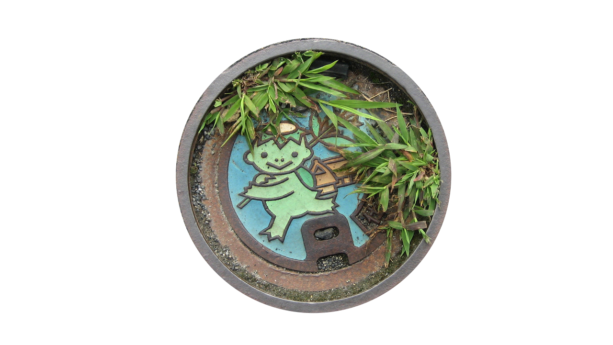

300-1929
1927-1950
1950-1960
1970-now
The Kappa is...
"The kappa...became the perfect symbol for the promotion of the countryside as a domestic tourist destination for the urban dweller seeking
nostalgic
confirmation of the cultural landscape"
"Through various tactics, the audience is offered an impressive mixture of
genuine
and
falsified
materials from folk culture..."
"The kappa used as a nostalgic symbol is not the grotesque and malicious creature of folklore, but rather the
kawaii
folklorism image created by the mangaka and others."
"The
cleansing
and
domestication
of the kappa parallels changes in the Japanese countryside itself, a countryside that has become more accessible, cleansed, in a sense, of the traditional discomforts of a rural environment.
"...both on a national and a regional scale, the kappa has become primarily a
commercial icon.
"
